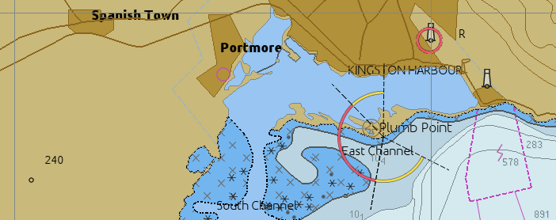
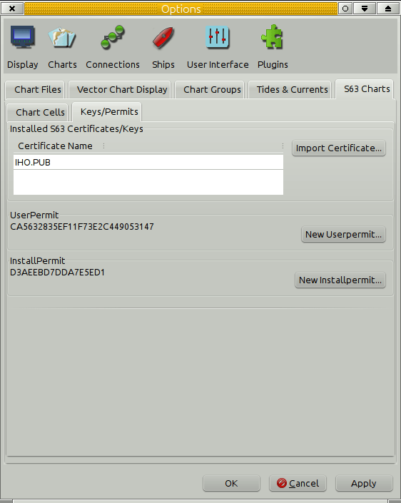
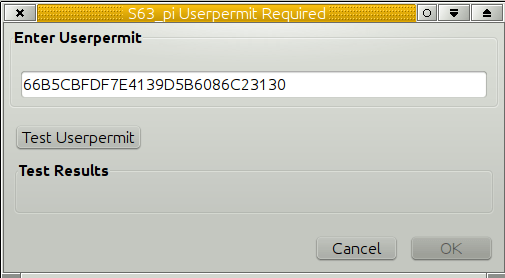
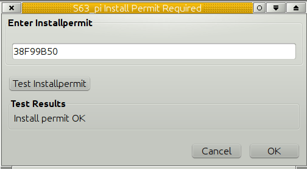
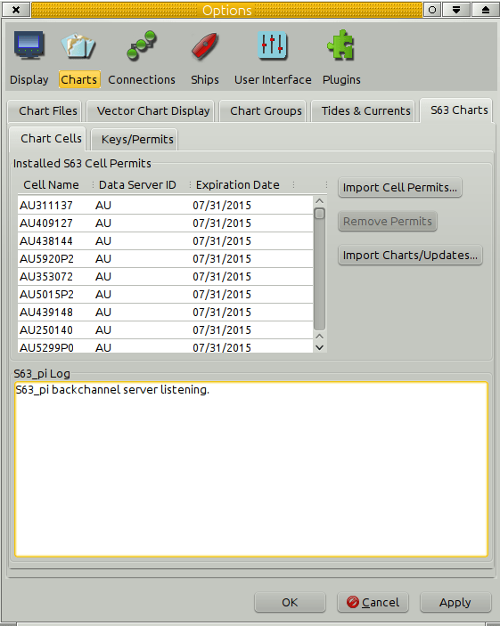
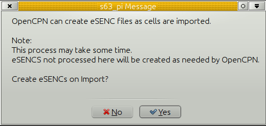

Chart showing Part of Jamaica, from the IHO S63 test suite.
This Plugin supports use of S63 encrypted Charts and dramatically expands OpenCPN's range of charts available.
These charts are quite reasonably priced….S-63 is the encrypted distribution format for S-57 vector charts. Today, hydrographical offices all over the world are producing their official vector charts in the S-57 format. Distribution is done under the S-63 standard.
To use the encrypted charts, you must get a license for your particular machine (called Permit), make sure to visit
for more information and to get the permits.
S63 is an encrypted version of S57 vector charts, and is the standard format for almost all, officially published, vector charts in today’s world. As a matter of fact, only NOAA and the East Asia Hydrographic Commission (EAHC), publishes free unencrypted S57 charts nowadays.
These, S57 and S63 charts, are the current state of the art charts. The quality of the charts are the best vector charts available. They are always kept up to date. No other vector chart are in the same league.
There are, however also some drawbacks. Many popular cruising areas are very poorly covered as the focus is on the needs for commercial shipping. One example is he Bahamas area. Another problem is the relatively high price. When licensing consider the licensing period. Your charts will be available still after expiring just without weekly updates.
OpenCPN handles these commercial, non free, charts through an open source plugin, that in the background connects to a “black box” helper application. An external entity, http://o-charts.org, handles the encrypted and commercial aspects of the S-63 plug-ins for OpenCPN.
The Keys/Permits tab.





Download
You may exercise the S64 Test set using the following special permits:
<code>
User Permit: 66B5CBFDF7E4139D5B6086C23130
Install Permit: 38F99B50
<\code>
Perhaps the best to start with is:
IHO S-64 [S-63 TDS v1.2]/8 Data Exchange Media/Test 8b/PERMIT.TXT